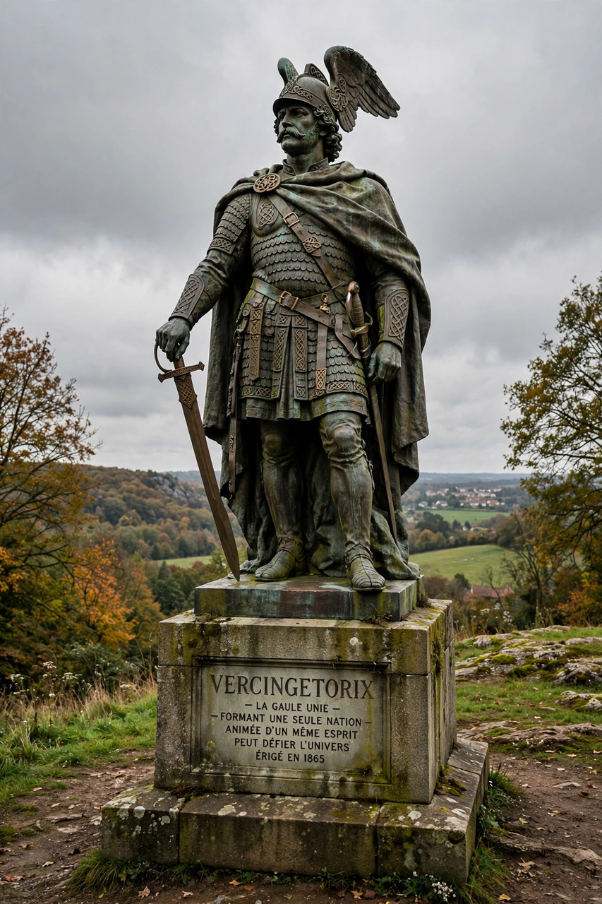

| Vercingetorix | |
|---|---|
| Born | c. 82 BCE, Gaul |
| Died | 46 BCE, Rome |
| Tribe | Arverni |
| Known for | Uniting the Gauls against Rome in 52 BCE |
| Defeated at | Battle of Alesia |
| Opponent | Julius Caesar |

Vercingetorix (c. 82 – 46 BCE) was a chieftain of the Arverni tribe who united the Gauls in a failed revolt against Roman forces during the last phase of the Gallic Wars of Julius Caesar. His name is conventionally interpreted as "great warrior king" or "king of great warriors" in Gaulish.
Vercingetorix was the son of Celtillus, an Arvernian leader who had been executed by his own people for aspiring to kingship. In the winter of 53–52 BCE, as revolt spread after the massacre of Roman traders at Cenabum, Vercingetorix seized power in the Arvernian capital Gergovia, was proclaimed king, and forged an alliance of Gallic peoples, demanding hostages and levies from tribes across Gaul.
Vercingetorix adopted a scorched-earth strategy, burning towns and stores to deny supplies to Caesar's legions, while sparing Avaricum — a decision that proved disastrous when the Romans stormed it and massacred its population. He then inflicted a rare defeat on Caesar at Gergovia. But after a cavalry reverse he withdrew into the fortified oppidum of Alesia, where Caesar besieged him behind vast double fortifications. When a massive Gallic relief army failed to break the siege, Vercingetorix surrendered — in Caesar's account, riding out and laying his arms at the conqueror's feet.
Kept prisoner for five years, Vercingetorix was paraded in Caesar's triumph in Rome in 46 BCE and then executed, traditionally by strangulation in the Tullianum prison. In 19th-century France he was revived as a national hero — Napoleon III commissioned his colossal statue at Alesia and promoted research into the Celtic past — and he remains the archetypal symbol of Gallic resistance, celebrated in French culture much as Arminius is in Germany.
Gallic Wars · Julius Caesar · Battle of Alesia · Gaul · Celts